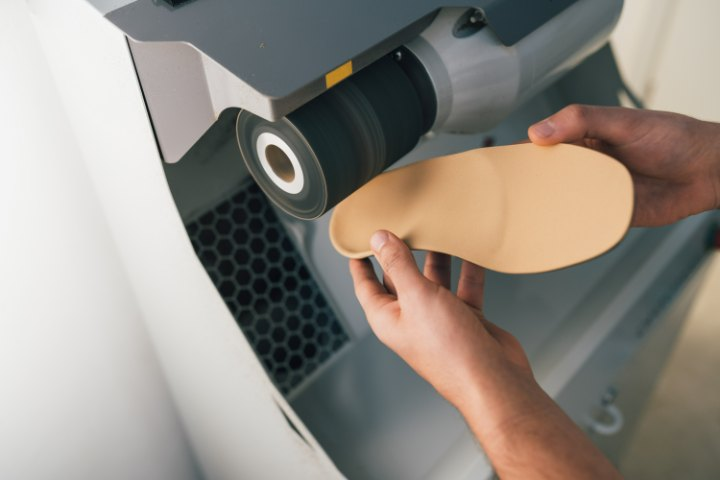

Soportes plantares y ortesis de silicona confeccionados en la clínica
Una plantilla no es un accesorio de confort: es un tratamiento. Su función es redistribuir las presiones del pie y corregir o compensar el movimiento que está provocando el dolor, y para eso tiene que partir de un estudio previo de la marcha.
Fabricamos los soportes plantares y las ortesis de silicona en la propia clínica, a partir de tu molde. Eso nos permite ajustar el material, el grosor y las descargas al milímetro, adaptarlos a tu calzado habitual y modificarlos en la misma consulta si algo molesta.
Cada tratamiento incluye revisiones de control: comprobamos que el dolor cede, que la plantilla no roza y que sigue cumpliendo su función con el uso.
Confeccionamos las plantillas a medida y las ortesis de silicona en nuestra propia clínica de podología en Murcia.
Plantillas fabricadas sobre tu molde, con las correcciones y descargas que indica el estudio. Distintos materiales según el peso, la actividad y el calzado.
Piezas moldeadas directamente sobre el dedo para separar, alinear o proteger la zona que roza. Se entregan en la misma sesión.
Fieltros y protecciones para aliviar de inmediato un callo, un juanete o una zona de roce mientras se resuelve la causa.
Del molde a la revisión
01
Exploración biomecánica y análisis de la pisada para definir qué debe corregir la plantilla.
02
Tomamos la forma exacta de tu pie en la posición de trabajo adecuada.
03
Fabricamos la plantilla u ortesis en la clínica, con el material elegido para tu caso.
04
Entrega, prueba en tu calzado y revisiones para ajustar lo que haga falta.
Consúltanos si tus plantillas actuales no te alivian.
968 23 19 64